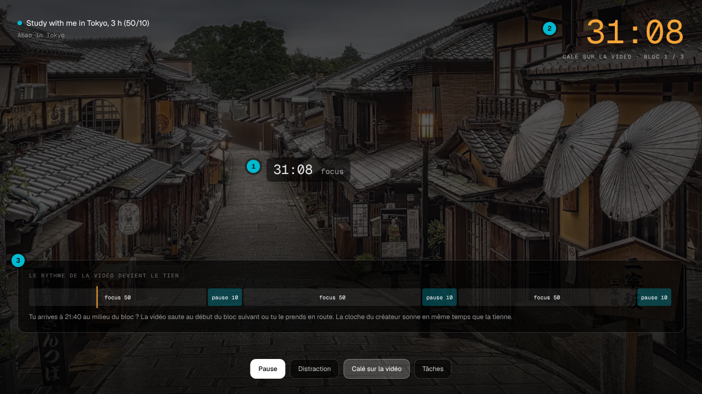
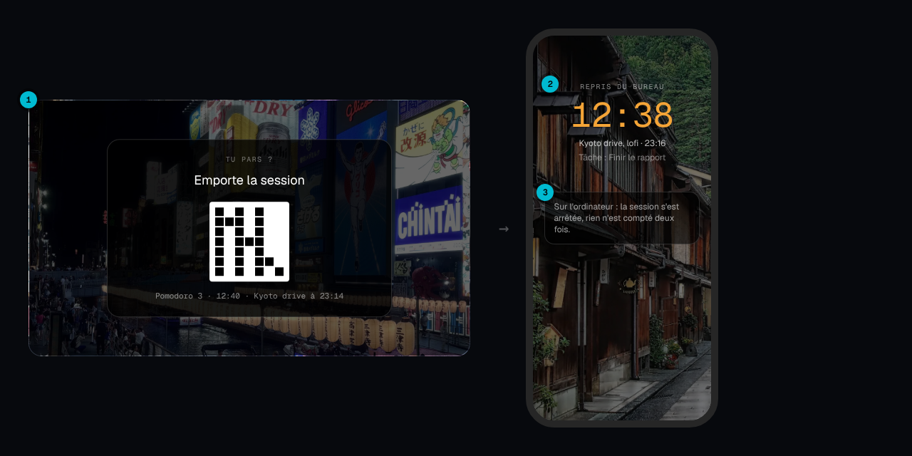
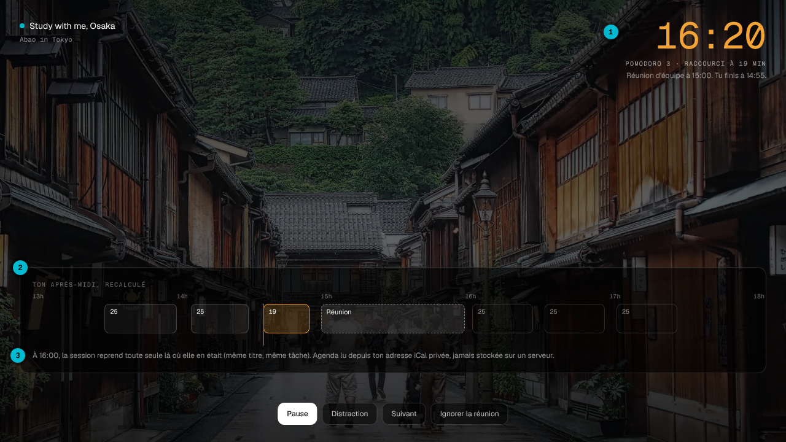
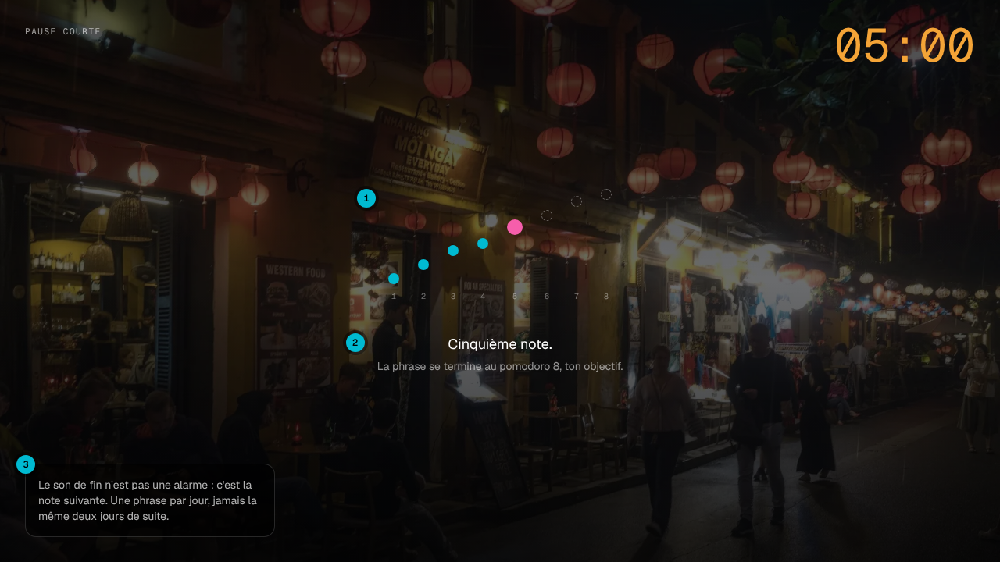
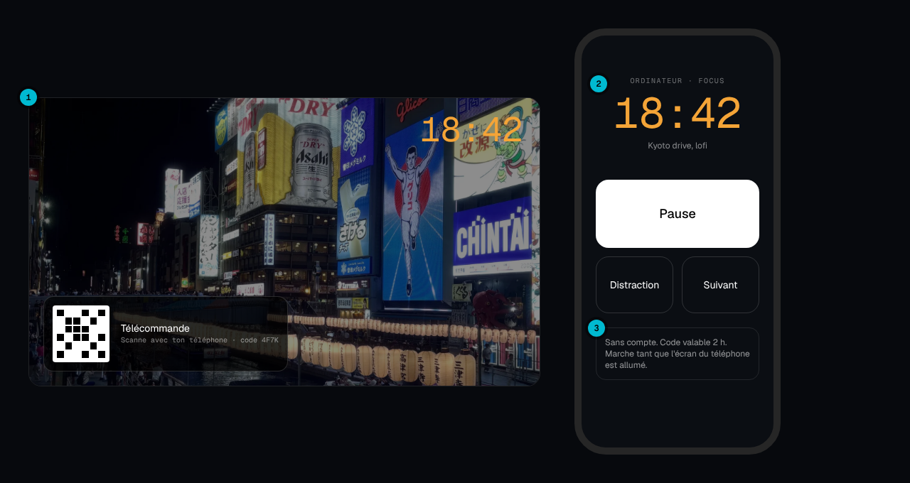
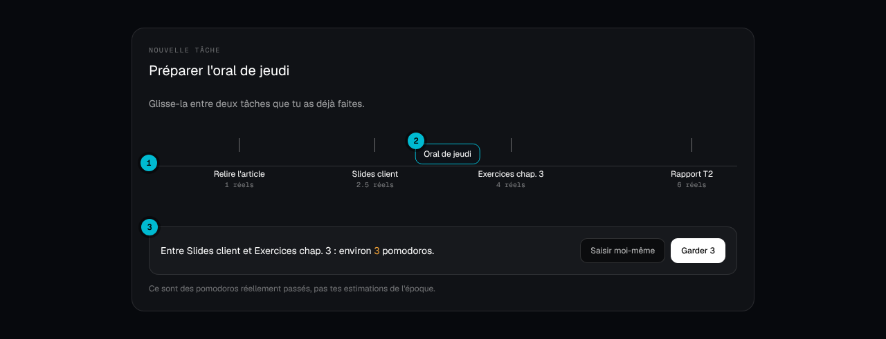
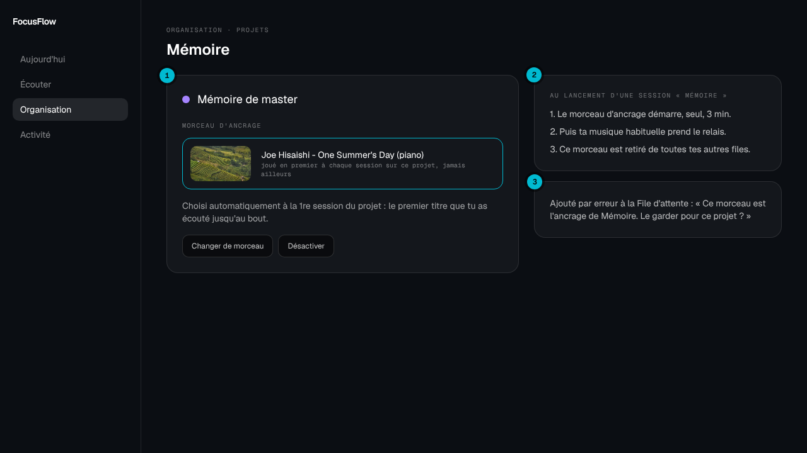
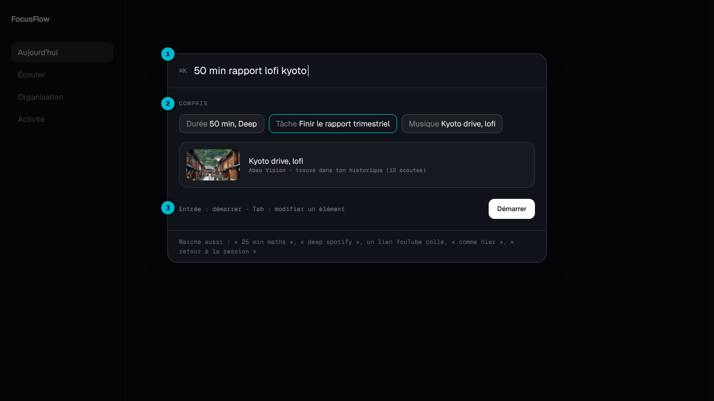
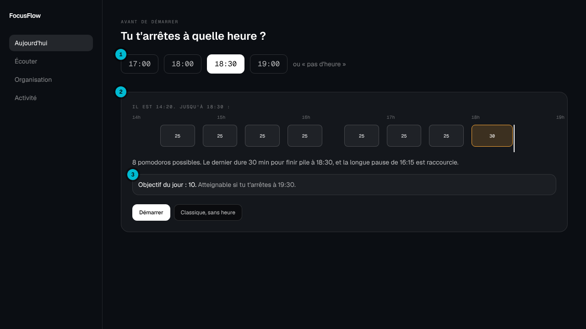
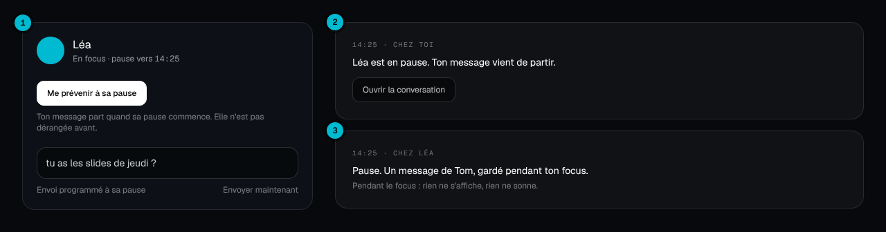

Rien n'est implémenté. Trois terrains : fonctionnel, ergonomie, design d'expérience. Les maquettes sont statiques (/lab/features). Triées par audace puis par valeur. Nouveauté vérifiée par recherche chez les concurrents, avec l'agent product-lead.
DECISIONS.md).Une session en cours ne survit pas à la navigation. Le minuteur (setInterval(tick)) et le lecteur vivent dans app/session/page.tsx. Si tu en sors, la musique s'arrête et le temps n'est plus décompté. Aucun bouton (nav, accueil, ⌘K) ne ramène à la session en cours. timerStore ne persiste que les réglages, donc un rechargement perd tout. Et « Reprendre » sur l'accueil appelle resetAll(), qui écrase une session en cours.
Ce n'est pas une idée « jamais vue » : c'est un correctif, je le sors donc du concours. Mais il conditionne trois des idées ci-dessous, ainsi que la n°1 validée : la Media Session sur téléphone doit continuer quand l'onglet passe en arrière-plan. Il faut donc un minuteur calculé depuis une échéance (endsAt) et non un compteur de tics, parce que Chrome bride les minuteurs des onglets cachés. Je l'intégrerai au plan de la n°1.
| # | Idée | Terrain | Audace | Valeur | Effort |
|---|---|---|---|---|---|
| 1 | Calé sur la vidéo | Design | 5 | 4,5 | M |
| 2 | Emporter la session sur le téléphone | Ergonomie | 5 | 4 | L |
| 3 | Le minuteur qui connaît ton agenda | Fonctionnel | 4 | 4,5 | L |
| 4 | La mélodie de la journée | Design | 5 | 3 | S |
| 5 | Téléphone télécommande | Ergonomie | 4 | 3,5 | M |
| 6 | Estimer par comparaison | Fonctionnel | 4 | 3,5 | M |
| 7 | Ancrage sonore | Design | 4 | 3 | S |
| 8 | Lancer en une phrase | Ergonomie | 3,5 | 4 | M |
| 9 | Dernier train | Fonctionnel | 3,5 | 4 | S |
| 10 | Prévenir à sa pause | Fonctionnel | 3 | 3 | M |
Répartition : fonctionnel 4 · ergonomie 3 · design 3
Les vidéos « Study With Me » ont leur propre minuteur incrusté (souvent 50/10, avec une cloche). FocusFlow se synchronise dessus : ta pause tombe pile quand le créateur fait la sienne.

Tu lances un « Study with me in Tokyo » de 3 h. La vidéo affiche 31:08 de focus à l'écran, ton minuteur FocusFlow affiche 12:40. Deux horloges qui se contredisent : soit tu ignores l'une, soit tu fais ta pause pendant que le créateur continue de travailler (et inversement). Le body-doubling, qui fait tout l'intérêt de ces vidéos, se casse.
Le créateur de la vidéo devient un vrai partenaire de travail, au même rythme que toi. C'est le principe du body-doubling (Focusmate le vend pour ça), mais sans rendez-vous ni inconnu à l'écran. Avec une seule horloge, tu n'as plus à arbitrer.
flowchart TD
V["Vidéo choisie"] --> S{"Segments connus ?"}
S -- "chapitres YouTube (Focus / Break)" --> P["/api/youtube : parse des chapitres (lib/ytParse.ts)"]
S -- "annotation du catalogue" --> A["data/videos.ts : schedule [début, fin, type]"]
S -- "aucun" --> N["Minuteur normal (repli)"]
P --> M["lib/videoSchedule.ts : segment courant = f(currentTime)"]
A --> M
M --> T["timerStore piloté (mode, secondes restantes)"]
Y["adapter : currentTime, seek, état"] --> M
M -- "début de bloc" --> Y
Ce n'est pas de l'affichage : le temps de la vidéo devient la source du minuteur. Le mode (travail ou pause) et les secondes restantes se déduisent de currentTime. FocusFlow peut aussi faire avancer la vidéo au début d'un bloc. Les stats, l'XP et les projets reçoivent les minutes réelles, par le même chemin que Flowtime.
Aucune app de focus ne le fait, faute de catalogue curated. Lofidoro joue un flux lofi avec son propre minuteur, Pomofocus n'a pas de lecteur, Focusmate est synchrone et entre inconnus (focusmate.com). Les créateurs « Study With Me » incrustent un minuteur dans la vidéo, mais aucun lecteur ne s'en sert.
data/videos.ts : champ optionnel schedule. Route existante app/api/youtube/* et lib/ytParse.ts : extraire les chapitres de la page watch (déjà parsée pour les mixes). Nouveau lib/videoSchedule.ts, en logique pure testée avec vitest.store/timerStore.ts : mode « piloté » (l'état vient de la vidéo, comme le prévoyait la roadmap pour un minuteur contrôlé). lib/playback/youtube.ts : exposer getCurrentTime/seekTo. app/session/page.tsx.Tu dois quitter ton bureau en plein pomodoro. Tu scannes un QR, et la session continue sur ton téléphone : même temps restant, même tâche, même titre à la même seconde. L'ordinateur s'arrête tout seul.

Il est 17:40, tu dois prendre le train mais tu es au milieu d'un pomodoro. Aujourd'hui la session est perdue : il faut tout relancer sur le téléphone, et le temps déjà fait n'est pas compté, ou compté deux fois si l'ordinateur continue.
| Aujourd'hui | Avec l'idée |
|---|---|
| 1. Terminer sur l'ordinateur (pomodoro en cours perdu) 2. Ouvrir FocusFlow sur le téléphone 3. Écouter, retrouver la vidéo 4. Démarrer, passer par /settings 5. Démarrer la session, et le minuteur repart de zéro 6. Chercher le passage dans la vidéo | 1. Scanner le QR Le pomodoro continue au même point, les minutes sont comptées une seule fois. |
| 6 actions, progression perdue | 1 action, rien de perdu |
sequenceDiagram
participant PC as Ordinateur (/session)
participant C as Canal éphémère (code aléatoire)
participant T as Téléphone (/handoff/code)
PC->>C: ouvre le canal, affiche le QR
T->>C: rejoint avec le code
PC->>C: état : endsAt, mode, n° pomodoro, tâche, file, titre, position
T->>T: hydrate timerStore + sessionStore, charge le titre à la position
T->>C: accusé de réception
PC->>PC: accumule les minutes faites, s'arrête sans compter la suite
On transfère un état complet, pas une vue. Le téléphone reconstruit la session à partir de l'échéance endsAt, de la file et de la position. L'ordinateur ne s'arrête qu'après l'accusé de réception, donc rien n'est perdu ni compté deux fois.
Spotify Connect transfère la musique seule. Des apps de minuteur synchronisent le minuteur seul, via un compte Apple (Focus, Timer for Productivity, Be Focused). Les deux ensemble, en un scan et sans compte : jamais vu.
endsAt (voir le constat en tête). store/timerStore.ts, store/sessionStore.ts, store/queueStore.ts, lib/playback/* (position, chargement à une position), nouvelle route app/handoff/[code]/page.tsx, QR généré en SVG localement (sans dépendance, ou une petite lib MIT).Le pomodoro en cours se raccourcit pour finir avant ta prochaine réunion. Aucun cycle n'est lancé s'il la chevauche, et à la fin de la réunion la session reprend là où elle en était.

14:36, tu lances un pomodoro de 25 min, sans penser à la réunion de 15:00. Résultat : soit tu coupes à 14:58 en plein élan et le pomodoro n'est pas compté, soit tu arrives en retard. Un utilisateur de Sunsama le réclame mot pour mot (roadmap Sunsama).
flowchart LR
U["URL iCal (localStorage)"] --> R["app/api/calendar/import (lit, ne stocke ni ne journalise)"]
R --> E["événements occupés du jour (RRULE, fuseaux)"]
E --> F["lib/agendaFit.ts : prochaine contrainte"]
T["timerStore.start"] --> F
F -- "chevauchement" --> P["Proposition : durée raccourcie"]
P -- "accepté" --> T2["timerStore : durée du cycle ajustée, minutes réelles créditées"]
E -- "fin de réunion" --> RS["Invitation à reprendre"]
Le minuteur change de comportement : la durée de chaque cycle devient une fonction de la prochaine contrainte réelle, pas une constante du preset. Les minutes réellement travaillées sont créditées, comme pour Flowtime.
Reclaim et Motion placent des tâches autour des réunions, mais leur minuteur ne s'adapte pas (reclaim.ai). D'autres lancent un minuteur depuis un événement, sans l'ajuster : Pomodoro Timer for Google Calendar, Calendoro. Session lit l'agenda sans adapter les cycles. Aucun ne raccourcit le pomodoro en cours.
app/api/calendar/import (CORS oblige), sans clé, qui ne stocke ni ne journalise l'URL. Parser ICS local (lib/ics.ts sait déjà écrire, il faut lire : RRULE, EXDATE, fuseaux). lib/agendaFit.ts pur et testé. store/timerStore.ts, app/session/page.tsx, store/prefsStore.ts.Le son de fin de pomodoro n'est plus une alarme : chaque fin joue la note suivante d'une phrase musicale. Elle ne se résout qu'au pomodoro qui atteint ton objectif du jour.

Le son de transition est un signal neutre, toujours le même : il ne dit rien de ta journée, et 17 h, quand il reste un pomodoro pour finir l'objectif, est le moment où on lâche. Il manque une tension qui donne envie de « finir la phrase ».
Une suite musicale qui s'arrête sur la sensible crée une attente de résolution, documentée en psychologie de la musique (Huron, Sweet Anticipation). On la ressent sans y penser. C'est l'effet Zeigarnik, appliqué au son plutôt qu'à une barre de progression qu'on finit par ne plus regarder. Les autres apps signalent la fin d'un cycle. Ici, chaque fin rappelle aussi la journée entière, sans rien afficher.
flowchart LR
G["goalStore (objectif en pomodoros)"] --> PH["lib/melody.ts : phrase du jour (graine = date)"]
S["statsStore.days[aujourd'hui].sessions"] --> I["indice de note"]
PH --> W["lib/sounds.ts : synthèse Web Audio"]
I --> W
W --> O["joué à chaque fin de pomodoro, à la place du carillon"]
Le son devient fonction de l'état de la journée (progression vers l'objectif), généré de façon déterministe par la date. Ce n'est pas un nouveau son, c'est un retour d'état qui passe par l'oreille.
Aucune app de focus trouvée qui encode la progression de la journée dans le son de transition. Duolingo et Forest jouent des sons de récompense fixes.
Le product-lead l'aurait écartée : c'est « juste » un son, et tu as supprimé le mixeur d'ambiances. Je la garde parce que ce n'est pas une ambiance : elle remplace un son qui existe déjà, ne coûte presque rien (S), et c'est l'idée la plus inédite de la liste. Si tu trouves que c'est du gadget, c'est un Non facile.
lib/sounds.ts (Web Audio existant), nouveau lib/melody.ts (pur), store/goalStore.ts, app/session/page.tsx. Option dans prefsStore. Pas de Supabase ni de dépendance.Le téléphone posé à côté du clavier pilote la session de l'ordinateur : pause, distraction, suivant, temps restant. Appairage par QR, sans compte.

Tu travailles dans Figma ou dans ton IDE en plein écran. Le téléphone sonne, il faut mettre en pause, ou un collègue t'interrompt et tu veux noter la distraction. Aujourd'hui, ça veut dire quitter ton outil et retrouver l'onglet : exactement la rupture de contexte que la session devait éviter.
| Aujourd'hui | Avec l'idée |
|---|---|
| 1. Quitter l'app de travail (Alt-Tab) 2. Retrouver le navigateur puis l'onglet 3. Bouger la souris pour faire réapparaître les contrôles (ils se masquent) 4. Cliquer Pause 5. Revenir dans l'app de travail | 1. Toucher Pause sur le téléphone posé à côté |
| 5 actions, et le contexte est perdu | 1 action, sans quitter l'écran de travail |
La n°1 validée (touches média) couvre le clavier quand il en a. La télécommande couvre la distraction (aucune touche média pour ça), les claviers sans touches média, et le temps restant d'un coup d'œil.
sequenceDiagram
participant PC as Ordinateur (/session)
participant C as Canal broadcast (code 2 h)
participant T as Téléphone (/remote/code)
PC->>C: état toutes les 5 s (endsAt, mode, titre)
T->>C: commande pause / distraction / suivant
C->>PC: commande
PC->>PC: timer.pause, markDistraction, adapter.next
PC->>C: nouvel état
Le téléphone envoie de vraies commandes, appliquées par la session de l'ordinateur (les mêmes actions que les raccourcis Espace et D). Le temps est affiché à partir de endsAt, donc sans dérive.
Le schéma « code + télécommande » est classique (Spotify Connect, Kahoot) mais absent des apps de focus. Elles se contentent de synchroniser des appareils sous un même compte (Be Focused).
app/remote/[code]/page.tsx. app/session/page.tsx (écoute des commandes), store/timerStore.ts, store/distractionStore.ts.navigator.vibrate n'existe pas sur iPhone. « Vibrer à la fin du pomodoro » demanderait le Web Push, donc une PWA (refusée). Je ne le promets pas.On n'estime plus une tâche en pomodoros dans l'absolu. On la place entre deux tâches déjà terminées dont le coût réel a été mesuré, et FocusFlow en déduit l'estimation.

« Combien de pomodoros pour préparer l'oral ? » Personne ne sait répondre, alors on tape 2 et on en fait 5 : c'est l'erreur de planification, systématique. Les estimations faussent ensuite le rythme des projets et les plans de Sprint. En revanche, on sait très bien dire « c'est plus long que les slides, plus court que le rapport ».
Le jugement relatif est bien plus fiable que l'absolu : c'est ce qui fonde le planning poker des équipes agiles. Et la référence n'est pas une estimation passée mais un temps réellement mesuré par FocusFlow, ce qui corrige le biais à la source au lieu d'afficher après coup qu'on s'est trompé.
flowchart LR
D["sessionStore : tâches terminées + pomodorosUsed"] --> R["lib/estimate.ts : échelle des coûts réels"]
R --> UI["Ligne de référence (glisser)"]
UI -- "position" --> I["Interpolation entre voisines"]
I --> E["pomodoroEstimate de la tâche"]
E --> P["projectStore (rythme / jour) + sprint"]
Le mode de saisie change, et donc la donnée elle-même : l'estimation qui alimente projets et Sprint repose sur des mesures. La précision d'estimation de /insights ne fait que constater l'écart.
Focus To-Do et les apps Pomodoro demandent une estimation absolue par tâche (Focus To-Do). Le planning poker est relatif mais collectif, et ancré sur des estimations. Une estimation relative ancrée sur ses propres temps mesurés : pas trouvée.
store/sessionStore.ts (pomodorosUsed existe), nouveau lib/estimate.ts (pur, testé), saisie dans components/TodoList.tsx, app/settings/page.tsx, components/TaskPlanner.tsx. Pas de Supabase.pomodorosUsed supérieur à 0.Chaque projet a un morceau qui lui est réservé : il ouvre chaque session sur ce projet, et ne joue jamais ailleurs.

Les cinq premières minutes sur un gros projet (mémoire, thèse, roman) sont les pires : il faut « se remettre dedans ». Le contexte mental ne revient pas tout seul.
Un indice constant et exclusif, associé toujours au même contexte, finit par déclencher ce contexte : c'est le principe des habitudes déclenchées par un indice (travaux de Wendy Wood). L'exclusivité est essentielle : un morceau entendu partout perd son pouvoir d'indice. Honnêtement, les preuves sur la mémoire dépendante du contexte musical sont mitigées. L'effet rituel, lui, est solide et ne coûte rien.
flowchart TD
P["projectStore.activeProject"] --> A{"Ancrage défini ?"}
A -- "non" --> F["1er titre écouté en entier = ancrage"]
A -- "oui" --> Q["File : ancrage en tête, puis musique choisie"]
Q --> X["Exclusion : retiré des files, radios, suggestions des autres contextes"]
Le comportement du lecteur change : la file est réécrite au démarrage, et le morceau est exclu partout ailleurs, y compris de la Radio commune validée.
Brain.fm conseille « la même musique à chaque session » (brain.fm), sans lien par projet ni exclusivité. Les routines de FocusFlow lancent un média, mais il peut jouer partout. Le product-lead l'aurait remplacée pour cette raison. Je la garde pour l'exclusivité, qui est le cœur du mécanisme.
store/projectStore.ts (champ anchorTrack, sync existante), lib/playback/queue.ts et continuation.ts (exclusion), app/session/page.tsx, components/ProjectsSection.tsx. Pas de Supabase en plus.Dans ⌘K, « 50 min rapport lofi kyoto » est compris et la session démarre : durée, tâche existante, musique retrouvée dans ton catalogue ou ton historique. Un lien collé marche aussi.

Aujourd'hui, ⌘K ne lance aucune session : « Démarrer une session » ouvre le catalogue. Il faut ensuite choisir la vidéo, passer par /settings et démarrer. Changer de durée, ajouter une tâche, utiliser une playlist de la bibliothèque : chaque variation ajoute des clics. C'est l'entrée en session, le moment où l'on est le plus fragile, qui coûte le plus.
| Aujourd'hui (comptés dans le code) | Avec l'idée |
|---|---|
| 1. « Choisir une ambiance » (accueil) 2. Survol de la carte puis « Démarrer » (catalogue, app/page.tsx)3. Choisir le preset ( /settings)4. Cocher la tâche 5. « Démarrer la session » 6. Modale « tâches restantes » si besoin Bibliothèque ou Spotify : +1 à 2 | 1. ⌘K, taper la phrase, Entrée Ce qui est compris est montré avant de lancer. En cas de doute, Tab pour corriger un élément, jamais un mauvais média lancé en silence. |
| 4 à 7 clics, plus la recherche de la vidéo | 1 action clavier, 0 clic |
flowchart LR
Q["Texte ⌘K"] --> D["Durée / preset (regex : 25, 50 min, deep, flow)"]
Q --> T["Tâche : recherche floue dans sessionStore.todos"]
Q --> M["Média : URL, ou recherche floue dans catalogue, biblio, playlists locales, historique (poids = écoutes)"]
D --> R["Résolution affichée"]
T --> R
M --> R
R -- "Entrée" --> S["Stores (timer, session) puis /session direct"]
Une analyse locale (fonctions pures dans lib/quickLaunch.ts, testées) qui configure les stores et ouvre directement /session, sans passer par /settings. Lot 0, presque gratuit : les entrées ⌘K « Relancer comme la dernière fois » et « Retour à la session ».
Les extensions Pomodoro de Raycast démarrent un minuteur sans résoudre de musique ni de tâche (Raycast Pomodoro). Todoist comprend les dates dans une phrase, mais ne lance rien. Composer toute une session de focus (rythme, tâche, musique) en une phrase : pas trouvé.
components/CommandPalette.tsx, nouveau lib/quickLaunch.ts, store/sessionStore.ts, store/timerStore.ts, data/videos.ts, store/playHistoryStore.ts, store/localPlaylistStore.ts. Pas de Supabase ni d'IA (repli IA possible plus tard via /api/coach, jamais obligatoire).Tu dis à quelle heure tu t'arrêtes. FocusFlow recalcule à rebours les cycles qui restent, ajuste le dernier pour finir pile, et dit si l'objectif du jour est encore atteignable.

Tu dois partir à 18:30 (train, enfants, cours). Avec des cycles fixes, le dernier pomodoro commence à 18:20 et se termine en catastrophe, ou tu t'arrêtes à 17:50 par prudence. Tu fais le calcul de tête toute l'après-midi, et c'est une charge mentale de plus.
flowchart LR
H["Heure d'arrêt"] --> F["lib/agendaFit.ts (même moteur que l'agenda)"]
N["Maintenant + état du cycle"] --> F
S["Réglages du preset"] --> F
F --> P["Plan : durées des cycles restants"]
P --> T["timerStore : chaque cycle prend sa durée du plan"]
G["goalStore"] --> F
T -- "écart (pause longue)" --> F
Les durées des cycles restants deviennent un plan recalculé en continu. C'est le lot A de l'agenda (n°3), sans serveur ni URL. Je le présente à part parce qu'il sert sans agenda.
Aucun minuteur trouvé qui planifie à rebours depuis une heure de fin. Le seul équivalent est le calcul de tête. Les planificateurs (Sunsama, Akiflow) placent des blocs, sans piloter un minuteur.
store/timerStore.ts (durée par cycle issue d'un plan), nouveau lib/agendaFit.ts (pur, partagé avec la n°3), app/settings/page.tsx, store/goalStore.ts. Pas de Supabase.Écrire à un ami en focus ne le dérange plus : le message part au début de sa pause. La conversation dit d'elle-même « en focus, pause vers 14:25 ».

Le chat entre amis est là, mais écrire à quelqu'un en focus, c'est le sortir de sa concentration. Alors on n'ose pas, ou on le fait quand même et on casse son pomodoro.
flowchart LR
A["Ami : /session publie focus_ends_at"] --> FS["friend_stats (Realtime, RLS existante)"]
FS --> C["Ma conversation : pause vers 14:25"]
M["Message rédigé"] --> Q["chatStore : file d'envoi locale"]
FS -- "activity passe en pause" --> Q
Q --> S["sendMessage (existant)"]
L'envoi est déclenché par un événement d'état chez l'autre (sa pause), et non par une heure fixe : si l'ami prolonge ou arrête, l'envoi suit.
Les modes « Ne pas déranger » des systèmes retiennent les notifications chez le destinataire. Ici c'est l'émetteur qui sait quand écrire, à partir du minuteur réel de l'autre. Pas vu dans une app de focus. Teams aurait un « me prévenir quand disponible », non vérifié.
friend_stats.focus_ends_at (RLS existante, add column if not exists). lib/friends.ts, store/chatStore.ts, components/FriendChat.tsx, app/session/page.tsx.| Idée écartée | Raison | Remplacée par |
|---|---|---|
| Pad musical (énergie × familiarité) | Existe depuis 2011 (mood pad Musicovery). Surtout, l'axe « énergie » serait inventé : 55 vidéos, 3 moods, et les audio-features de Spotify sont coupées. Affichage déguisé. | Calé sur la vidéo |
| Le pomodoro qui commence petit (2 min qui deviennent 25) | Existe tel quel : 2 Minutes & Beyond, Chrony. | Dernier train |
| Estimations corrigées automatiquement par le biais mesuré | Variante de la précision d'estimation de /insights. Une correction invisible se rapproche de « Smart Focus IA ». | Estimer par comparaison |
| Relais entre amis (chaîne asynchrone) | Troisième mécanique de pression sociale, après la série à deux et la promesse, toutes deux refusées. | Emporter la session sur le téléphone |
| Courrier de pause (notifications retenues) | Variante des modes Focus d'iOS et de macOS, et les notifications internes à FocusFlow sont rares. | Prévenir à sa pause (on garde le statut « pause vers ») |
| La cloche attend la fin du morceau | Trop proche de « finir sur la fin du morceau », déjà écartée en vague 1, et de la famille « pauses en musique » refusée. | (non retenue) |
| La session survit à la navigation (mini-lecteur global) | Pas inédite (tout lecteur de musique le fait). C'est un correctif, présenté à part en tête de page. | (correctif, hors concours) |
Aucune idée ne touche aux sujets refusés (ambiances, Mode Strict, détection automatique de distraction, PWA, Focus Rooms, Smart Focus IA, capture rapide). La télécommande et le passage sur téléphone ne partagent aucun minuteur entre personnes : c'est le même utilisateur sur deux appareils.